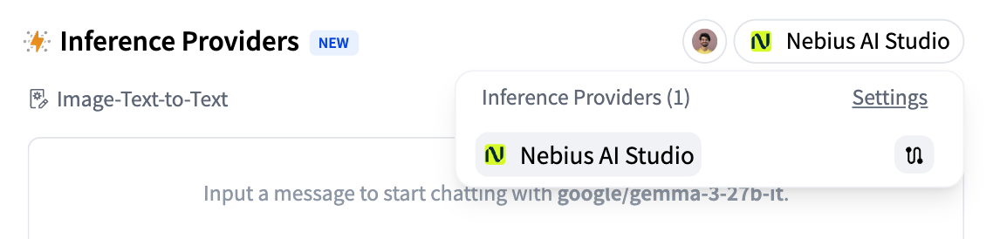
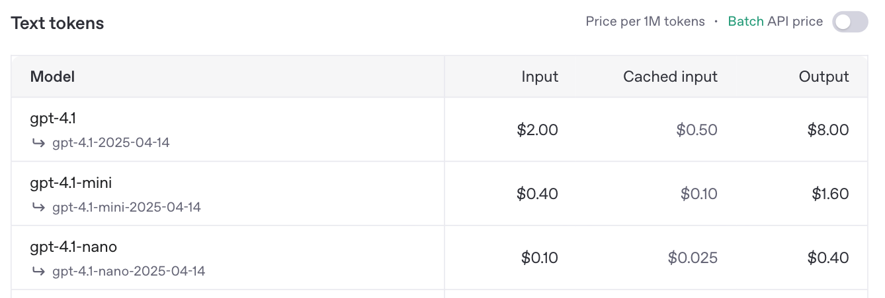
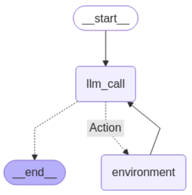
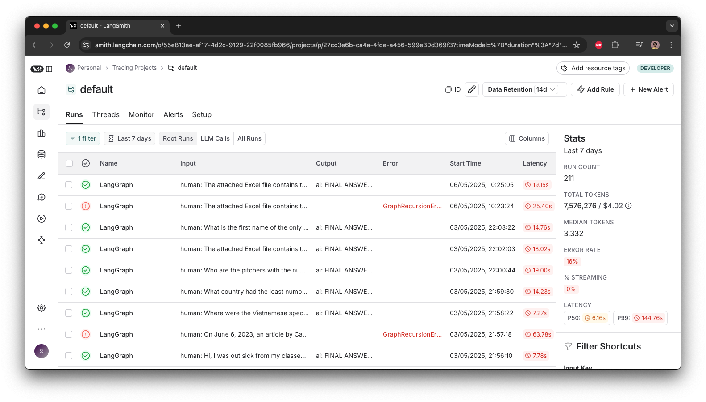
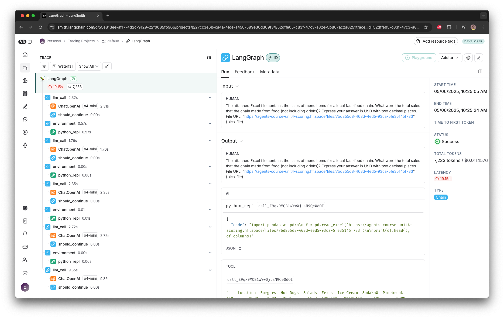

Published: May 2025
Recently, I followed the excellent (and free!) Hugging Face 🤗 AI Agents Course, which I highly recommend to anyone interested in studying AI Agents from theory and design to hands-on practice.
An AI agent is a system that can take actions on its own to achieve a goal. Unlike language models (LLMs) like GPT, which only generate text, AI agents can interact with the world. A typical AI agent consists of an LLM (used to reason and decide on the next actions) and tools (functions that allow the agent to act in the world, such as performing web searches). It must be carefully prompted to follow a sequence of thought–action–observation steps.
After the first units of the course (which introduce AI agent libraries such as smolagents, LlamaIndex, and LangGraph), you get to participate to a challenge. This is where things get exciting: building an autonomous agent from scratch that can answer complex, multi-step questions.
Developing my own solution, while watching my agent become more and more competent, has been a lot of fun. I’m proud to share that I ranked in the top 10%! In this post, I’ll walk you through my approach to building a powerful AI agent. Let’s dive in!
The goal is to create an autonomous AI agent that will be evaluated on a subset of the GAIA benchmark. The latter consists of questions that are conceptually simple for humans but remarkably challenging for current AI systems. Here’s an example:
“What country had the least number of athletes at the 1928 Summer Olympics? If there's a tie for a number of athletes, return the first in alphabetical order. Give the IOC country code as your answer.”
The approach is straightforward for a human. As long as we have internet access, we have all the tools needed to answer it. But a pure LLM, without access to external tools, would likely fail.
The benchmark uses exact match to evaluate answers (i.e., the prediction must match the reference exactly to score), so we must carefully design our agent to return only what’s expected, no more, no less.
There’s a public student leaderboard for the challenge. Note, however, that it doesn't reflect true rankings, since all student solutions are open-source and anyone can reuse their public apps to submit under their own name. I used this code to get my real rank.
I actually built two distinct solutions to explore different frameworks:
You can find my code in this Hugging Face repo.
Note: You won’t be able to run the app directly without setting the required API keys as environment variables (HF_TOKEN, OPENAI_API_KEY, and BRAVE_SEARCH_API_KEY).
LlamaIndex is very convenient, offering many integrations that help you get started quickly. These are accessible through LlamaHub, a community-driven repository of tools and data connectors.
The code behind my LlamaIndex agent fits in just 80 lines, check it out here. Let’s explore it!
Model (reasoning engine):
First, we define the LLM using the Hugging Face Inference API:
# !pip install llama-index-llms-huggingface-api
from llama_index.llms.huggingface_api import HuggingFaceInferenceAPI
model_name = "Qwen/Qwen2.5-Coder-32B-Instruct"
provider = "hf-inference"
llm = HuggingFaceInferenceAPI(model_name=model_name, provider=provider)
The model_name can be any model from the Hugging Face Model Hub that supports the “text-generation” task.
The provider specifies which inference provider you want to use (i.e., where the model runs its predictions). By default, we use the Hugging Face Inference API, but some models are only available through other providers. For instance, the Google Gemma 3 27B Instruct model is currently only available through the Nebius provider. You can find this information on each model's page.
Fun fact: HuggingFaceInferenceAPI didn’t support providers other than the default until my recent contribution to the library!

Each inference call is billed, depending on the provider’s pricing and the model used. The larger the model, the more expensive the call.
To save costs, I debugged using smaller models like Qwen2.5-Coder-7B-Instruct, and reserved the larger models for final runs. I didn’t go as far as using huge models like DeepSeek-R1 (671B parameters). While such a model would likely improve performance, it would also significantly increase the bill!
Tools (to take actions):
Once the model and API provider are set, the next step is to define the agent’s tools, the functions that allow it to take actions in the world. Here, we use LlamaHub to load prebuilt tools developed by the community, and we also define some custom tools tailored to the challenge.
# each of the import needs to be installed before (e.g. pip install llama-index-tools-wikipedia)
from llama_index.tools.wikipedia import WikipediaToolSpec
from llama_index.tools.duckduckgo import DuckDuckGoSearchToolSpec
from llama_index.tools.code_interpreter import CodeInterpreterToolSpec
tool_spec_list = []
tool_spec_list += WikipediaToolSpec().to_tool_list() # to query wikipedia
tool_spec_list += DuckDuckGoSearchToolSpec().to_tool_list() # to make web search
tool_spec_list += CodeInterpreterToolSpec().to_tool_list() # to run python code
Now, let’s define some custom tools to extend the agent’s capabilities, so it can interpret images or analyze audio files.
from huggingface_hub import InferenceClient
from llama_index.core.tools import FunctionTool
# --- Functions --- #
def query_image(query: str, image_url: str) -> str:
"""Ask anything about an image using a Vision Language Model
Args:
query (str): the query about the image, e.g. how many persons are on the image?
image_url (str): the URL to the image
"""
client = InferenceClient(provider="nebius")
try:
completion = client.chat.completions.create(
model="google/gemma-3-27b-it",
messages=[
{
"role": "user",
"content": [
{
"type": "text",
"text": query
},
{
"type": "image_url",
"image_url": {
"url": image_url
}
}
]
}
],
max_tokens=512,
)
return completion.choices[0].message
except Exception as e:
return f"query_image failed: {e}"
def automatic_speech_recognition(file_url: str) -> str:
"""Transcribe an audio file to text
Args:
file_url (str): the URL to the audio file
"""
client = InferenceClient(provider="fal-ai")
try:
return client.automatic_speech_recognition(file_url, model="openai/whisper-large-v3")
except Exception as e:
return f"automatic_speech_recognition failed: {e}"
### --- Tool instance ---
query_image_tool = FunctionTool.from_defaults(query_image)
automatic_speech_recognition_tool = FunctionTool.from_defaults(automatic_speech_recognition)
# add the custom tools to the tools list
tool_spec_list += [query_image_tool, automatic_speech_recognition_tool]
We need to make sure to include typing information and a clear docstring description in each tool function. This helps the LLM understand what each function does and when to use it appropriately.
Agent definition (LLM + tools):
Now that all our tools are in place, we can define our agent using the ReActAgent workflow. “ReAct” (short for Reason + Act) is an approach introduced in this paper, which guides the LLM to break down its reasoning into structured steps: Thought → Action → Observation. This prompting strategy helps the agent stay focused and transparent in its decision-making.
from llama_index.core.agent.workflow import ReActAgent
agent = ReActAgent(llm=llm, tools=tool_spec_list)
Prompt:
Finally, we customize the default ReAct system prompt for our agent. The goal is to ensure that the agent returns a final answer in the exact format required by the GAIA benchmark. (Remember: to score, the agent’s answer must exactly match the reference).
from llama_index.core import PromptTemplate
# custom ReAct prompt where we add the GAIA team prompting example at the beginning
custom_react_system_header_str = """\
You are a general AI assistant.
A human will ask you a question. Report your Thoughts, Actions, Observations as described in ## Output Format, and finish your answer with the following template: FINAL ANSWER: [YOUR FINAL ANSWER HERE]
YOUR FINAL ANSWER should be a number OR as few words as possible OR a comma separated list of numbers and/or strings.
If you are asked for a number, don't use comma to write your number neither use units such as $ or percent sign unless specified otherwise.
If you are asked for a string, don't use articles, neither abbreviations (e.g. for cities), and write the digits in plain text unless specified otherwise.
If you are asked for a comma separated list, apply the above rules depending of whether the element to be put in the list is a number or a string.
## Tools
You have access to a wide variety of tools. You are responsible for using the tools in any sequence you deem appropriate to complete the task at hand.
This may require breaking the task into subtasks and using different tools to complete each subtask.
You have access to the following tools:
{tool_desc}
## Output Format
Please answer in the same language as the question and use the following format:
'''
Thought: The current language of the user is: (user's language). I need to use a tool to help me answer the question.
Action: tool name (one of {tool_names}) if using a tool.
Action Input: the input to the tool, in a JSON format representing the kwargs (e.g. {{"input": "hello world", "num_beams": 5}})
'''
Please ALWAYS start with a Thought.
NEVER surround your response with markdown code markers. You may use code markers within your response if you need to.
Please use a valid JSON format for the Action Input. Do NOT do this {{'input': 'hello world', 'num_beams': 5}}.
If this format is used, the tool will respond in the following format:
'''
Observation: tool response
'''
You should keep repeating the above format till you have enough information to answer the question without using any more tools. At that point, you MUST respond in one of the following two formats:
'''
Thought: I can answer without using any more tools. I'll use the user's language to answer
FINAL ANSWER: [YOUR FINAL ANSWER HERE (In the same language as the user's question)]
'''
'''
Thought: I cannot answer the question with the provided tools.
FINAL ANSWER: [YOUR FINAL ANSWER HERE (In the same language as the user's question)]
'''
## Current Conversation
Below is the current conversation consisting of interleaving human and assistant messages.
"""
# update default prompt with a custom one
custom_react_system_header = PromptTemplate(custom_react_system_header_str)
agent.update_prompts({"react_header": custom_react_system_header})
Run the agent and post-processing:
That’s it! Our agent is now ready to answer questions by taking actions! The final step is to invoke the agent and post-process its response to extract only the final answer.
question = "A question that involves taking actions"
handler = agent.run(question)
async for ev in handler.stream_events():
# uncomment to see the tool output
# if isinstance(ev, ToolCallResult):
# print(f"\nCall {ev.tool_name} with {ev.tool_kwargs}\nReturned: {ev.tool_output}")
if isinstance(ev, AgentStream):
print(f"{ev.delta}", end="", flush=True)
# run the query
response = await handler
# post-process the response (cast AgentOutput to str and keep only what's after "FINAL ANSWER:" for the exact match)
response = str(response)
try:
response = response.split("FINAL ANSWER:")[-1].strip()
except:
print('Could not split response on "FINAL ANSWER:"')
print("\n\n"+"-"*50)
print(f"Agent returning with answer: {response}")
Example run:
In this example, the agent is asked to analyze an audio file to answer a question. We can see that it correctly takes the appropriate action by calling our custom tool automatic_speech_recognition. Once it receives the transcription, it has everything it needs to reason through the problem and format its final answer.
**************************************************
Agent received question: Hi, I was out sick from my classes on Friday, so I'm trying to figure out what I need to study for my Calculus mid-term next week. My friend from class sent me an audio recording of Professor Willowbrook giving out the recommended reading for the test, but my headphones are broken :(
Could you please listen to the recording for me and tell me the page numbers I'm supposed to go over? I've attached a file called Homework.mp3 that has the recording. Please provide just the page numbers as a comma-delimited list. And please provide the list in ascending order.
File URL: "https://agents-course-unit4-scoring.hf.space/files/1f975693-876d-457b-a649-393859e79bf3" (.mp3 file)
**************************************************
Thought: The current language of the user is: English. I need to use a tool to help me answer the question.
Action: automatic_speech_recognition
Action Input: {"file_url": "https://agents-course-unit4-scoring.hf.space/files/1f975693-876d-457b-a649-393859e79bf3"}
Call automatic_speech_recognition with {'file_url': 'https://agents-course-unit4-scoring.hf.space/files/1f975693-876d-457b-a649-393859e79bf3'}
Returned: AutomaticSpeechRecognitionOutput(text=" Before you all go, I want to remind you that the midterm is next week. Here's a little hint. You should be familiar with the differential equations on page 245. Problems that are very similar to problems 32, 33 and 44 from that page might be on the test. And also some of you might want to brush up on the last page in the integration section, page 197. I know some of you struggled on last week's quiz. I foresee problem 22 from page 197 being on your midterm. Oh, and don't forget to brush up on the section on related rates on pages 132, 133 and 134.")
Thought: I can answer without using any more tools. I'll use the user's language to answer
FINAL ANSWER: 132, 133, 134, 197, 245
--------------------------------------------------
Agent returning with answer: 132, 133, 134, 197, 245
Benchmark:
Using the Qwen2.5-Coder-32B-Instruct model along with the tools we've defined, the agent was able to achieve a 25% score.
At this point, I could have improved the performance by upgrading both the model and the agent’s toolkit. However, I chose to explore another framework first, with the intention of optimizing my favorite solution later. Spoiler alert: It was LangGraph.
LangGraph, built alongside the widely used LangChain framework, is designed to help build controllable agents. It uses a simple graph system made of nodes and links, allowing you to customize the level of control over the agent’s behavior.
With that said, let’s build our LangGraph agent (which you can find here)! You’ll notice similarities with our previous agent built with LlamaIndex.
Model (reasoning engine):
For the inference provider, I decided to use the OpenAI API, but I could have opted for other providers as well. LangChain supports many different providers, such as Hugging Face, Mistral AI, Anthropic, and more.
from langchain_openai import ChatOpenAI
# load gpt-4.1-nano (cheap, for debug) with temperature=0 for less randomness
llm = ChatOpenAI(model="gpt-4.1-nano", temperature=0)
As mentioned earlier, I used a cheaper model for debugging purposes (in this case, gpt-4.1-nano). The reason for this is that the bill can quickly add up when dealing with agents that make multiple autonomous requests, sometimes even loading entire web pages and sending them as input to the LLM.
One thing I really appreciate about the OpenAI Platform is that their pricing is transparent. You’re charged based on the model you select, the number of tokens you send, and the number of tokens you receive.

Tools (to take actions):
Now, let’s define our tools. As with LlamaIndex and LlamaHub, LangChain offers ready-to-use tools. In this case, we’ll use the BraveSearch tool from the community and define the remaining tools ourselves. You can find the custom tool definitions in my repo here.
Note: I replaced the DuckDuckGo tool with BraveSearch because I found it to be more performant. The results are closer to what you’d get from a Google search, and it’s free with a limit of 2,000 requests per month.
from langchain_community.tools import BraveSearch
from .custom_tools import (multiply, add, subtract, divide, modulus, power,
query_image, automatic_speech_recognition, get_webpage_content, python_repl_tool,
get_youtube_transcript)
community_tools = [
BraveSearch.from_api_key( # Web search (more performant than DuckDuckGo)
api_key=os.getenv("BRAVE_SEARCH_API_KEY"), # needs BRAVE_SEARCH_API_KEY in env
search_kwargs={"count": 5}), # returns the 5 best results with their URL
]
custom_tools = [
multiply, add, subtract, divide, modulus, power, # Basic arithmetic
query_image, # Ask anything about an image using a VLM
automatic_speech_recognition, # Transcribe an audio file to text
get_webpage_content, # Load a web page and return it to markdown
python_repl_tool, # Python code interpreter
get_youtube_transcript, # Get the transcript of a YouTube video
]
tools = community_tools + custom_tools
tools_by_name = {tool.name: tool for tool in tools} # for later, to call the tools
llm_with_tools = llm.bind_tools(tools) # give the tools to the LLM
Agent definition (LLM + tools):
Here, we define the graph workflow of our agent. The goal is to have the LLM (reasoning engine) call tools (i.e., take actions and gather more knowledge) until it has enough information to formulate a final answer.
To implement this, we define two nodes:
llm_call: This node represents the point where the LLM is called with the full history of all messages (system prompt + human question + previous steps taken by the agent). From here, the LLM will either call a tool (or multiple tools simultaneously) or provide a final answer, completing the workflow.tool_node: This node executes the tools that the LLM decided to call. Once the tool(s) are executed, the output is added to the message history.Next, we define the links (edges) between the nodes:
llm_call (START → llm_call).llm_call can either go to tool_node (if the LLM decides to call a tool), or it can end the workflow by providing a final answer (conditional edges: llm_call → tool_node or llm_call → END).tool_node always loops back to llm_call (tool_node → llm_call).Once we’ve defined the code and called agent_builder.compile(), we can visualize the agent’s graph workflow:

from typing import Literal
from langchain_core.messages import SystemMessage, HumanMessage, ToolMessage
from langgraph.graph import MessagesState
from langgraph.graph import StateGraph, START, END
# customized GAIA system prompt
system_prompt = """\
You are a general AI assistant with tools.
I will ask you a question. Use your tools, and answer with the following template: FINAL ANSWER: [YOUR FINAL ANSWER]. \
YOUR FINAL ANSWER should be a number OR as few words as possible OR a comma separated list of numbers and/or strings.
If you are asked for a number, don't use comma to write your number neither use units such as $ or percent sign unless specified otherwise.
If you are asked for a string, don't use articles, neither abbreviations (e.g. for cities), and write the digits in plain text unless specified otherwise.
If you are asked for a comma separated list, apply the above rules depending of whether the element to be put in the list is a number or a string.
If you use the python_repl tool (code interpreter), always end your code with `print(...)` to see the output.
"""
# Nodes
def llm_call(state: MessagesState):
"""LLM decides whether to call a tool or not"""
return {
"messages": [
llm_with_tools.invoke(
[
SystemMessage(
content=system_prompt
)
]
+ state["messages"]
)
]
}
def tool_node(state: dict):
"""Performs the tool call"""
result = []
for tool_call in state["messages"][-1].tool_calls:
tool = tools_by_name[tool_call["name"]]
observation = tool.invoke(tool_call["args"])
result.append(ToolMessage(content=observation, tool_call_id=tool_call["id"]))
return {"messages": result}
# Conditional edge function to route to the tool node or end based upon whether the LLM made a tool call
def should_continue(state: MessagesState) -> Literal["environment", END]:
"""Decide if we should continue the loop or stop based upon whether the LLM made a tool call"""
messages = state["messages"]
last_message = messages[-1]
# If the LLM makes a tool call, then perform an action
if last_message.tool_calls:
return "Action"
# Otherwise, we stop (reply to the user)
return END
# Build workflow
agent_builder = StateGraph(MessagesState)
# Add nodes
agent_builder.add_node("llm_call", llm_call)
agent_builder.add_node("environment", tool_node)
# Add edges to connect nodes
agent_builder.add_edge(START, "llm_call")
agent_builder.add_conditional_edges(
"llm_call",
should_continue,
{
# Name returned by should_continue : Name of next node to visit
"Action": "environment",
END: END,
},
)
agent_builder.add_edge("environment", "llm_call")
# Compile the agent
agent = agent_builder.compile()
# Show the agent
agent.get_graph(xray=True).draw_mermaid_png()
Run the agent and post-processing:
Now is the time to try our LangGraph autonomous agent in action!
question = "A question that involves taking actions"
# create the input
messages = [HumanMessage(content=question)]
# call the agent
messages = agent.invoke(
{"messages": messages},
{"recursion_limit": 30}) # maximum number of steps before hitting a stop condition
# print all the steps taken
for m in messages["messages"]:
m.pretty_print()
# post-process the response (keep only what's after "FINAL ANSWER:" for the exact match)
response = str(messages["messages"][-1].content)
try:
response = response.split("FINAL ANSWER:")[-1].strip()
except:
print('Could not split response on "FINAL ANSWER:"')
print("\n\n"+"-"*50)
print(f"Agent returning with answer: {response}")
Example run:
To answer this new question from the challenge, the agent needs to download an Excel sheet and compute the total sales from a restaurant chain (excluding drinks). Let’s see how it performs!
Running with o4-mini, the LLM decides to call the Python code interpreter and passes the following code as an argument: it loads the Excel sheet using the pandas library, then returns the first few rows of the dataframe and its column names.
In the second call, it tries to sum all the dataframe values (which is a mistake since it must exclude the “Soda” column). However, it forgets to add a print statement, resulting in an empty output from the code interpreter.
In the third call, the agent corrects itself, summing the appropriate columns and printing the result.
Before returning the final answer, it makes an extra and unnecessary call to print the dataframe shape, which doesn’t contribute to the solution.
Finally, the agent returns the correct total sales, formatted to two decimal places as requested.
**************************************************
Agent received question: The attached Excel file contains the sales of menu items for a local fast-food chain. What were the total sales that the chain made from food (not including drinks)? Express your answer in USD with two decimal places.
File URL: "https://agents-course-unit4-scoring.hf.space/files/7bd855d8-463d-4ed5-93ca-5fe35145f733" (.xlsx file)
**************************************************
Python REPL can execute arbitrary code. Use with caution.
================================ Human Message =================================
The attached Excel file contains the sales of menu items for a local fast-food chain. What were the total sales that the chain made from food (not including drinks)? Express your answer in USD with two decimal places.
File URL: "https://agents-course-unit4-scoring.hf.space/files/7bd855d8-463d-4ed5-93ca-5fe35145f733" (.xlsx file)
================================== Ai Message ==================================
Tool Calls:
python_repl (call_E9qx9MQB1wYw0jLaN9Qe0dOI)
Call ID: call_E9qx9MQB1wYw0jLaN9Qe0dOI
Args:
code: import pandas as pd
df = pd.read_excel('https://agents-course-unit4-scoring.hf.space/files/7bd855d8-463d-4ed5-93ca-5fe35145f733')
print(df.head(), df.columns)
================================= Tool Message =================================
Location Burgers Hot Dogs Salads Fries Ice Cream Soda
0 Pinebrook 1594 1999 2002 2005 1977 1980
1 Wharvton 1983 2008 2014 2015 2017 2018
2 Sagrada 2019 2022 2022 2023 2021 2019
3 Algrimand 1958 1971 1982 1989 1998 2009
4 Marztep 2015 2016 2018 2019 2021 2022 Index(['Location', 'Burgers', 'Hot Dogs', 'Salads', 'Fries', 'Ice Cream',
'Soda'],
dtype='object')
================================== Ai Message ==================================
Tool Calls:
python_repl (call_3QSp1lnn4zeTEdGYAck8PQN2)
Call ID: call_3QSp1lnn4zeTEdGYAck8PQN2
Args:
code: df.sum()
================================= Tool Message =================================
================================== Ai Message ==================================
Tool Calls:
python_repl (call_X90NEBSmN5XHbw6DHeNTGNiS)
Call ID: call_X90NEBSmN5XHbw6DHeNTGNiS
Args:
code: food_cols = ['Burgers','Hot Dogs','Salads','Fries','Ice Cream']
food_total = df[food_cols].sum().sum()
print(food_total)
================================= Tool Message =================================
89706
================================== Ai Message ==================================
Tool Calls:
python_repl (call_3k4qiJ2Sq1sFLSbgTotzCXaP)
Call ID: call_3k4qiJ2Sq1sFLSbgTotzCXaP
Args:
code: print(df.shape)
================================= Tool Message =================================
(9, 7)
================================== Ai Message ==================================
FINAL ANSWER: 89706.00
--------------------------------------------------
Agent returning with answer: 89706.00
Observability:
LangChain provides a powerful tool for monitoring and evaluating LLM applications: LangSmith. It’s a fantastic way to track and visualize agent behavior in real-time.
To configure LangSmith, you only need to set up two environment variables:
export LANGSMITH_API_KEY="XXX" # get yours for free in smith.langchain.com
export LANGSMITH_TRACING=true
Once this is done, all our agent runs will be traced in the web app, with useful stats such as execution time, tokens used, cost, errors, and more. This is especially helpful when debugging failed runs.
For example, when I ran the previous query with “gpt-4.1-mini” instead of “o4-mini,” the agent failed to answer within 30 steps (it got lost in the matrix 💊) and ended up hitting the recursion limit.

We can also view the detailed trace of each run and easily share it. Check out this example: LangSmith Trace.

Benchmark:
With this implementation and set of tools, the agent was able to score as follows on the benchmark:
The performance gain is considerable, undoubtedly due to the use of a reasoning model that has been post-trained to enhance logical reasoning and multi-step problem-solving capabilities.
This clearly demonstrates that we need powerful models inside our agents to effectively solve questions that involve multiple steps. After all, the LLM is the reasoning engine of the agent.
Of course, switching to more capable models usually comes with the tradeoff of increased costs (in my case by a factor of 2.75 for the same number of tokens). For this reason, I only used o4-mini for my final run across the 20 questions of the benchmark. To my pleasant surprise, the agent required fewer steps to answer the questions, resulting in fewer tokens generated and ultimately reducing the API costs.
Building AI agents for the Hugging Face Challenge has been an exciting and insightful learning experience. Here are the key takeaways from developing and testing my solutions:
o4-mini), improved the score: 30% with gpt-4.1-mini and 60% with o4-mini. This demonstrated how much the choice of reasoning model can impact results on complex tasks. With more time and compute resources, I’d love to experiment with open-weight models like Llama 4, DeepSeek R1, or Mistral Large.Overall, building these agents was a lot of fun. It’s clear that while the LLM is at the heart of the agent, the agent's architecture, tools, and prompt design play significant roles in its ability to solve complex, multi-step problems. I hope that sharing my experience will help others exploring the exciting world of AI agents!
Finally, I want to thank Hugging Face and the instructors behind this fantastic course (Joffrey Thomas, Ben Burtenshaw, Thomas Simonini, Sergio Paniego) 🤗
Cheers!